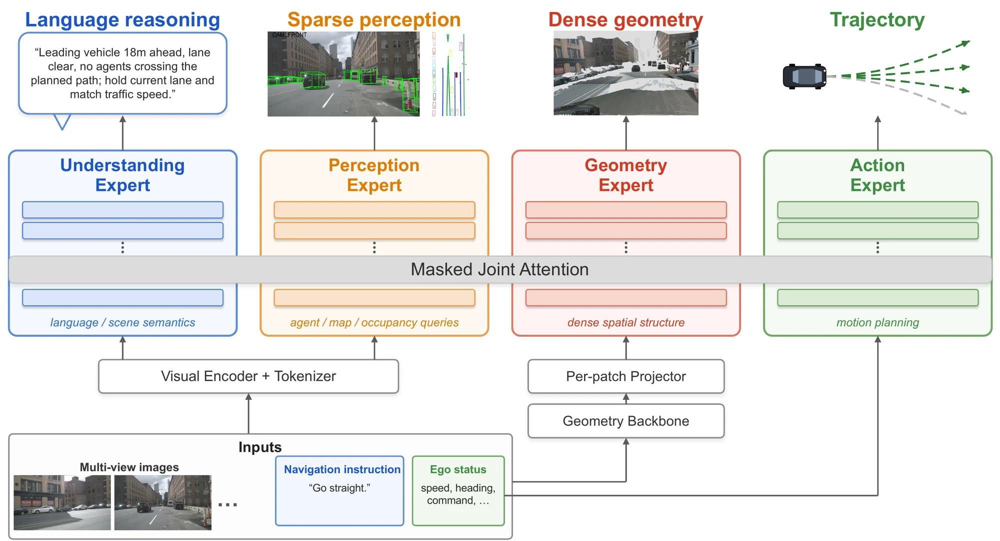
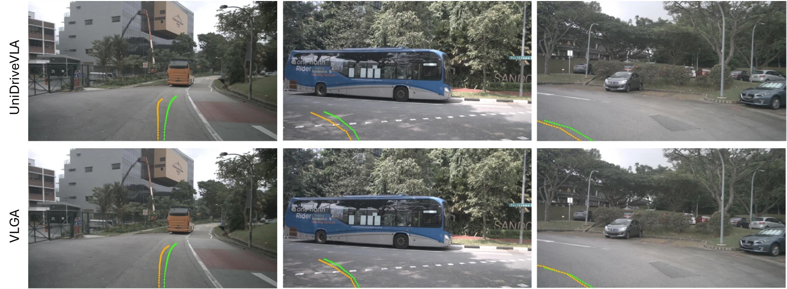
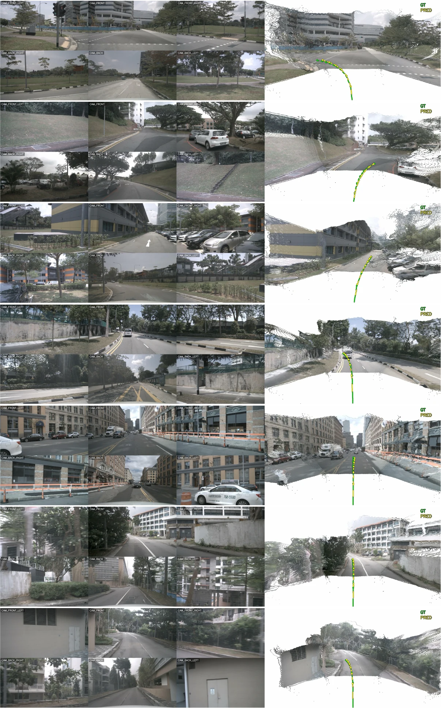

Abstract
Vision-language-action (VLA) models can describe scenes and reason about them in
language, yet still struggle to ground their actions in the dense 3D world around
them. Existing approaches either inject features from a frozen 3D foundation model
without an objective that ensures the policy uses them, or constrain geometry with
sparse box and map losses that provide no dense spatial signal. We introduce
VLGA, the first vision-language-action model supervised to reconstruct the dense
3D world it drives through. VLGA introduces geometry as a fourth modality
alongside vision, language, and action through a dedicated expert supervised by a
per-pixel pointmap regression loss against LiDAR. Extensive experiments conducted
on challenging nuScenes and Bench2Drive datasets for open-loop and closed-loop
evaluations, respectively, show the superiority of VLGA over counterpart VLA
methods. In particular, on open-loop nuScenes, VLGA sets a new state of the art
among VLA methods without ego status, with the lowest L2 (0.50 m average) and
3-second collision rate (0.18%). On closed-loop Bench2Drive, VLGA attains the
state-of-the-art driving score of 79.08, +0.71 over the strongest prior VLA, at
comparable efficiency and comfort.
01
One missing modality
An effective VLA driving policy needs three things at once: language reasoning
to interpret intent and context, dense spatial grounding to perceive the
continuous 3D structure of the scene, and a dedicated geometry capacity that
processes this structure with its own parameters rather than the language
model’s. No existing paradigm achieves all three—sparse perception lacks dense
grounding, feature injection leaves no parameter budget for geometry, and
geometry-only policies drop language entirely. VLGA keeps all three.
Paradigms for grounding driving policies in 3D geometry.
(a) VLAs with sparse 3D perception use structured supervision such as boxes, occupancy, and lane maps, but lack dense spatial grounding.
(b) Injection-based VLAs expose dense 3D features to the language model, but lack dedicated geometry capacity.
(c) Geometry-only policies provide dense grounding with dedicated capacity, but remove language reasoning.
(d) VLGA preserves all three via a parameter-isolated geometry expert supervised with dense geometry reconstruction.
02
A four-expert policy that also reconstructs
VLGA is a four-expert Mixture-of-Transformers coupled by masked joint attention: an
understanding expert for language and scene semantics, a perception
expert for sparse agent, map, and occupancy queries, a new geometry
expert for dense spatial structure, and an action expert that attends to
all three and conditions on ego status to emit the trajectory.
During training, the geometry stream is supervised by a dense per-pixel pointmap
regression loss against LiDAR—an explicit signal on the stream’s 3D content
rather than the action loss alone. Where prior VLA driving policies see, read, and
act, VLGA also reconstructs.

VLGA architecture. A four-expert Mixture-of-Transformers coupled by
masked joint attention. The action expert attends to the understanding, perception,
and geometry experts and conditions on ego status to emit the trajectory; the
geometry expert is supervised by per-pixel pointmap regression against LiDAR.
03
Results
0.50 m
L2 average
Lowest of all methods on nuScenes (ST-P3, without ego status)
0.18%
Collision @ 3s
Lowest among VLA methods at every horizon (without ego status)
79.08
Driving Score
State of the art on closed-loop Bench2Drive, +0.71 over the prior SOTA
15/16
Metrics ranked first
Among VLA methods across all nuScenes planning metrics without ego status
We focus on the leakage-free without-ego-status protocol on nuScenes, where
kinematic extrapolation cannot shortcut the task. VLGA-Large ranks first among VLA
methods on 15 of the 16 L2 and collision metrics, its ST-P3 L2 is the lowest of
all methods, and its collision rate is the lowest among VLA methods at every
horizon. The same pattern holds at 2B scale, indicating the improvement stems from
the geometry stream rather than model capacity.
Open-loop planning on nuScenes, without ego status — averaged L2 (m) and collision (%) under both protocols; lower is better. Selected rows; full tables in the paper.
Method
ST-P3 L2
ST-P3 Col.
UniAD L2
UniAD Col.
LLM
UniAD
0.73
0.61
1.03
0.77
–
SparseDrive
0.55
0.08
0.99
0.21
–
FSDrive
0.53
0.17
0.96
0.40
Qwen2-VL-3B
UniDriveVLA-Base
0.54
0.17
0.96
0.41
Qwen3-VL-2B
UniDriveVLA-Large
0.51
0.11
0.90
0.27
Qwen3-VL-8B
VLGA-Base (Ours)
0.52
0.14
0.95
0.35
Qwen3-VL-2B
VLGA-Large (Ours)
0.50
0.09
0.90
0.22
Qwen3-VL-8B
Closed-loop driving on Bench2Drive — official CARLA closed-loop metrics; higher is better. Selected rows; full tables in the paper.
Method
Driving Score
Success Rate (%)
Efficiency
Comfortness
DriveMoE
74.22
48.64
175.96
15.31
Orion
77.74
54.62
151.48
17.38
UniDriveVLA
78.37
51.82
198.86
11.78
VLGA (Ours)
79.08
52.73
194.63
13.06
The gains concentrate exactly where driving is hardest: long-horizon collision
open-loop, and closed-loop skills like Give Way and Emergency Brake
that demand pausing at the right offset or braking at the right distance. Skills
bottlenecked by reactive control or visual semantics are left largely unchanged
— the geometry stream sharpens the dense spatial understanding that
tight-clearance driving needs.
04
Seeing the geometry at work

Qualitative planning comparison on nuScenes. Predicted 3-second
trajectory (yellow) and ground truth
(green) projected onto the front camera. VLGA stays closer
to the ground truth through turns and around nearby vehicles, while the baseline
(UniDriveVLA) drifts laterally. The two policies differ only in VLGA’s supervised
geometry stream.

What the geometry expert encodes. For nuScenes validation samples,
the dense 3D pointmap is reconstructed from the geometry stream by the
training-time decoder, with the green ground-truth and
yellow predicted ego trajectories overlaid. The
reconstructions capture road surface, lane structure, and surrounding obstacles,
and the predicted trajectory closely tracks the ground truth.
05
Citation
@article{yao2026vlga,
title = {{VLGA}: Vision-Language-Geometry-Action Models for Autonomous Driving},
author = {Yao, Jin and Kurra, Dhruva Dixith and Lampo, Tom and Cheng, Zezhou and Guo, Danhua and Yaman, Burhan},
year = {2026}
}